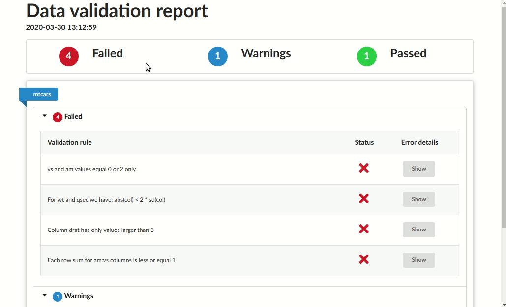
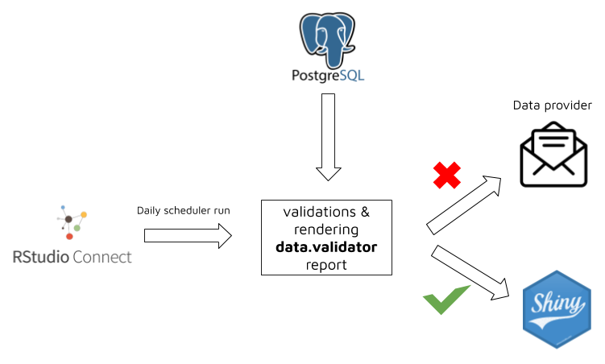

Description
data.validator is a package for scalable and reproducible data validation. It provides:
- Functions for validating datasets in
%>%pipelines:assert_if,assert_colsandassert_rows - Predicate functions from assertr package, like
in_set,within_bounds, etc. - Functions for creating user-friendly reports that you can send to email, store in logs folder, or generate automatically with RStudio Connect.

Data validation
Validaton cycle is simple:
- Create report object.
- Prepare your dataset. You can load it, preprocess and then run
validate()pipeline. - Validate your datasets.
- Start validation block with
validate()function. It adds new section to the report. - Use
assert_*functions and predicates to validate the data. You can create your custom predicates. Seebetween()example. - Add assertion results to the report with
add_results()
- Start validation block with
- Print the results or generate HTML report.
library(assertr) library(magrittr) library(data.validator) report <- data_validation_report() validate(mtcars, name = "Verifying cars dataset") %>% assert_if(drat < 0, description = "Column drat has only positive values") %>% assert_cols(in_set(c(0, 2)), vs, am, description = "vs and am values equal 0 or 2 only") %>% assert_cols(within_n_sds(1), mpg, description = "mpg within 1 sds") %>% assert_rows(num_row_NAs, within_bounds(0, 2), vs, am, mpg, description = "not too many NAs in rows") %>% assert_rows(maha_dist, within_n_mads(10), everything(), description = "maha dist within 10 mads") %>% add_results(report) between <- function(a, b) { function(x) { a <= x && x <= b } } validate(iris, name = "Verifying flower dataset") %>% assert_if(Sepal.Length > 0, description = "Sepal length is greater than 0") %>% assert_cols(between(0, 4), Sepal.Width, description = "Sepal width is between 0 and 4") %>% add_results(report) print(report)
Reporting
Print results to the console:
print(report) # Validation summary: # Number of successful validations: 1 # Number of failed validations: 4 # Number of validations with warnings: 1 # # Advanced view: # # |table_name |description |type | total_violations| # |:----------|:-------------------------------------------------|:-------|----------------:| # |mtcars |Column drat has only positive values |success | NA| # |mtcars |Column drat has only values larger than 3 |error | 4| # |mtcars |Each row sum for am:vs columns is less or equal 1 |error | 7| # |mtcars |For wt and qsec we have: abs(col) < 2 * sd(col) |error | 4| # |mtcars |vs and am values equal 0 or 2 only |error | 27| # |mtcars |vs and am values should equal 3 or 4 |warning | 24|
Save as HTML report
save_report(report)

Using custom report templates
In order to generate rmarkdown report data.validator uses predefined report template. You may find it in inst/rmarkdown/templates/standard/skeleton/skeleton.Rmd.
The report contains basic requirements for each report template used by save_report function:
- defining params
params:
generate_report_html: !expr function(...) {}
extra_params: list()- calling content renderer chunk
```{r generate_report, echo = FALSE}
params$generate_report_html(params$extra_params)
```If you want to use the template as a base you can use RStudio. Load the package and use File -> New File -> R Markdown -> From template -> Simple structure for HTML report summary. Then modify the template adding custom title, or graphics with leaving the below points unchanged and specify the path inside save_report’s template parameter.
How the package can be used in production?
The package was successfuly used by Appsilon in production enviroment for protecting Shiny Apps against beeing run on incorrect data.
The workflow was based on the below steps:
Running RStudio Connect Scheduler daily.
Scheduler sources the data from PostgreSQL table and validates it based on predefined rules.
Based on validation results a new
data.validatorreport is created.
4a. When data is violated:
data provider and person responsible for data quality receives report via email
thanks to
assertrfunctionality, the report is easily understandable both for technical, and non-technical persondata provider makes required data fixes
4b. When data is correct:
- a specific trigger is sent in order to reload Shiny data
The workflow is presented on below graphics 
Contributing
We welcome contributions of all types!
We encourage typo corrections, bug reports, bug fixes and feature requests. Feedback on the clarity of the documentation and examples is especially valuable.
If you want to contribute to this project please submit a regular PR, once you’re done with new feature or bug fix.
Changes in documentation
Both repository README.md file and an official documentation page are generated with markdown.
Documentation is rendered with pkgdown. Just run pkgdown::build_site() after rendering new README.md.